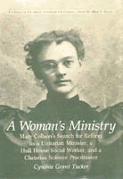

The biography of an unknown woman committed to social change
The biography of an unknown woman committed to social change


 The biography of an unknown woman committed to social change
The biography of an unknown woman committed to social change

|  |
A Woman's MinistryCynthia Grant Tuckercloth EAN: 978-0-87722-338-2 (ISBN: 0-87722-338-6) |
This biography of an unknown woman tells the story of an energetic idealist whose society offered her no satisfactory outlet for her extraordinary talent. Intensely committed to social change, Mary Collson (1870-1953) tried to forge a vocation that would improve the lot of the poor and dispirited. The conflicts she faced were confronted by several generations of reformers who debated the legitimacy of extending women's social roles, the possibility of institutional change, and the choice of reforming society at large or transforming individual lives.
Cynthia Grant Tucker is Professor of English at Memphis State University.
American Studies
History
Women's Studies
American Civilization, edited by Allen F. Davis.
The focus of American Civilization, edited by Allen F. Davis, is American cultural history. In keeping with the interdisciplinary work in this field, which characteristically brings together art history, literary history and theory, and material culture, the titles in this series cover diverse aspects of American experience—from attitudes toward death to twentieth-century design innovations to images of country life in art and letters to trade unions' reliance on religious discourse. The series has been a pioneer in presenting work that uses photographs as historical documents and from its inception has been firmly committed to women's studies. As the first university press series in the field, American Civilization provided the inspiration and the standard for much of the interdisciplinary work developing in the contemporary academy.
© 2015 Temple University. All Rights Reserved. This page: http://www.temple.edu/tempress/titles/327_reg.html.